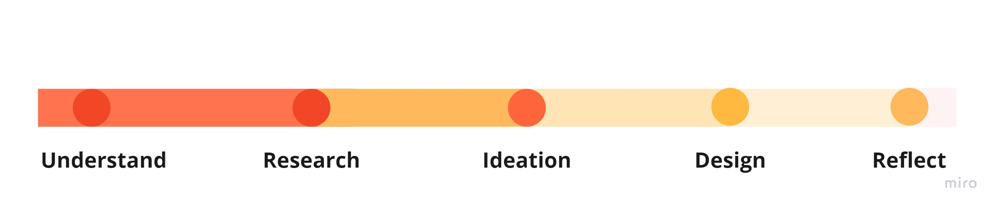
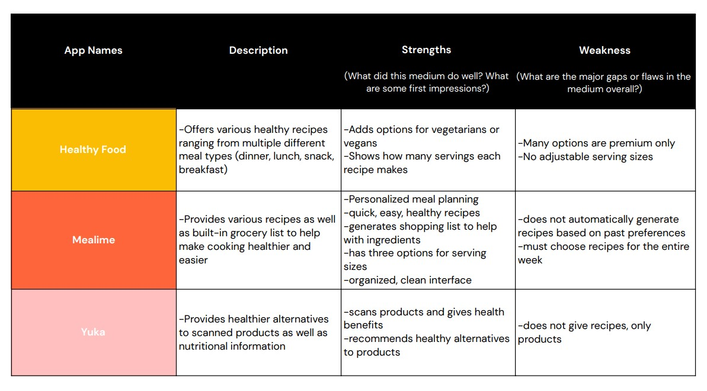
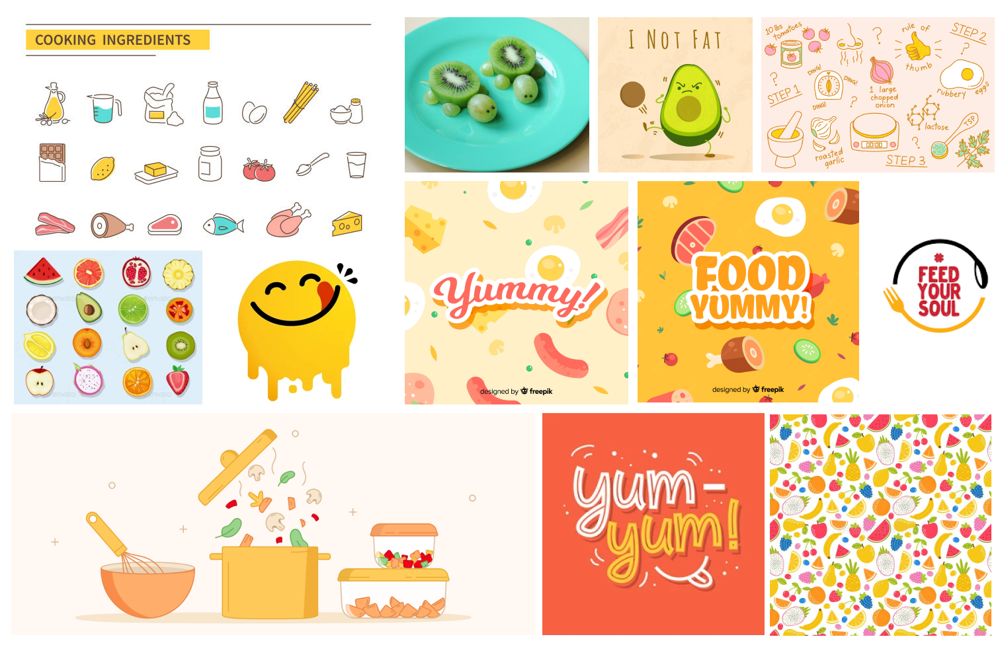

YumTum.
eat happy, eat clean

UX Design Fundamentals 2022
Course Instructor: Michael Worthington & Roman Jaster
Duration: 4 weeks
Role: UI/UX Designer
Team: Individual project
Tools: Figma, Miro, Google Suite, Adobe CC
Timeline
1. Understand
Understand the Context
Eating healthy is important for one's body and mind
Becoming a plant parent became super popular recently (especially since quarantine has had many people exploring different hobbies), and many new people are becoming increasingly interested in joining this niche group.
- Eating healthy may help you live longer
- Lowers risk of heart disease, type 2 diabetes, and some cancers
- Eating healthy helps combat symptoms of depression and anxiety
Sources: Center of Disease Control and Prevention / aetna
Project Overview
Many people are looking for healthier eating habits.
Description: YumTum is an app aimed to help people eat healthier. It includes dietary plans that could help people bulk, cut, or remain at the same weight. Each meal is broken down to show the nutrient information as well as the ingredient list. There is also a built-in grocery list containing the ingredients for chosen recipes, that can help facilitate the shopping process as well! Users can then create their own meals following recipes provided by the app.
Audience:
- People trying to eat healthier and live a more sustainable lifestyle
- People with dietary restrictions
- People trying to reach their weight goals in a healthy manner
- People who want to cook more meals at home rather than eat out
How it works: The app will begin by asking users what their goals are: bulking/cutting/maintaining. Then it will ask for their dietary preferences; any food they do not eat, are allergic to, or restrictions. All of this information will be processed to then create suggested recipes for users. Each recipe will have a general breakdown of the nutritional information of each meal, including calorie count, carbs, etc. Once the user has selected the recipes they like, a shopping list will automatically be created containing the ingredients needed, this list will be interactive (can be checked/unchecked).
2. Research
Research
I analyzed competitors to gain insights on existing features and patterns in the current market.
By analyzing competitors, I was able to identify key features that I would likely use in my own app as well as identify the material I deem as unnecessary in my case. I identified strengths and weaknesses of each respective app; this especially would help in contributing to my thought process during the ideation stage.
3. Ideation
Ideation
Personas


In order to better understand my target audience, I created user personas. These personas allowed me to see potential reasons why someone would use my app and what their goals would be from using the app.
Ideation
Moodboard.
To have an idea of what the app's overall vibe would be, I created a moodboard of severall images that related to food or cooking. While creating this moodboard, I kept in mind my target audience and designed a fun, bright, and positive type of atmosphere whilst retaining the foodie aesthetic.
Ideation
Mapping Content & Interactions
Content Map
In order to clearly structure and organize the way in which content is managed on each page, I created a content map. This chart helps to clearly see exactly what content is on each page.
Interaction Map
Similar to the content map, the interaction map shows the possible interactions a user can have with the content. This can really help show the options or decisions users have to make in order to proceed to other sections.
Site Map
Combining both the interaction and content maps, I created a sitemap to help me visualize what the actual proccess of navigating the app would be like. The interface of each content page is very minimal in order to not distract from the functions it provides, since this map is more focused on the content than the aesthetics that will come later in the design process.
4. Design
Design Approach
Guidelines for UI Design
To start off the visual design process, I created a set of guidelines to use throughout the rest of the process. This helped create a more cohesive design and ensured all buttons, icons, and filters were the same throughout all the screens. When designing this set of guidelines, I made sure to look back at and reference the moodboard in order to ensure the overall vibe of the app is consistent.
.png)
Design Approach
Mid-Fidelity Wireframes
After brainstorming the interaction process, I developed mid-fidelity wireframes in order to have a simple base structure for the site. This wireframing process helped me map out the app's features while not getting distracted by the visual design decisions.
Final Design
Key Focus points of our app include: Personalization & Recipes
.png)
Personalization
In order to address the dietary needs and restrictions of each individual user, users can input different food groups they wish to avoid, their specific diet, and/or their weight goals. All of this information is then processed to create custom recommendations for the user.
Recipes
The app provides a range of recipes, once selected it shows the serving size, ingredient list, recipe steps, and the amount of time estimated to finish the recipe. All this information is very useful to people attempting this recipe.
.png)
5. Reflect
Reflection
Learnings & Reflections
Throughout the 4 weeks of this design project, I was able to explore different means of gathering information regarding my project topic, explored user perspectives using personas, visually brainstormed via a moodboard, wireframed, and finally prototyped an interactive app.